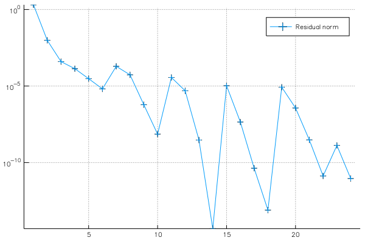

JacobiDavidson.jl
This package implements the Jacobi-Davidson method for (generalized) non-Hermitian eigenvalue problems involving large, sparse matrices.
It provides two methods jdqr and jdqz which iteratively generate a partial, approximate Schur decomposition for a matrix $A$ or a matrix pencil $(A, B)$. The Schur vectors form an orthonormal basis for eigenspaces, and they can easily be transformed to eigenvectors as well.
Jacobi-Davidson versus Arnoldi
Jacobi-Davidson can be particularly useful compared to Arnoldi when eigenvalues around a specific target $\tau$ in the complex plane are requested. For the standard eigenvalue problem, the Arnoldi method would expand the search space using $v_{n+1} = (A - \tau I)^{-1}v_n$. This linear system must be solved rather accurately in order to retain the Arnoldi decomposition.
The Jacobi-Davidson method on the other hand is not a Krylov subspace method and does not rely on an accurate Arnoldi decomposition; rather it can be seen as a subspace accelerated, approximate Newton method. Each iteration it must solve a linear system as well, but the upside is that it does this only approximately. The basic premise being that there is no need to solve intermediate, approximate solutions in the Newton iterations to full precision.
This means that Jacobi-Davidson can use a few steps of an iterative method internally, optionally with a preconditioner.
Example
Let $A$ and $B$ be diagonal matrices of size $n$ with $A_{kk} = \sqrt{k}$ and $B_{kk} = 1 / \sqrt{k}$. The eigenvalues of the problem $Ax = \lambda Bx$ are $1, \dots, n$. The exact inverse of $(A - \tau B)$ is used as a preconditioner, namely a diagonal matrix $P$ with $P_{kk} = \sqrt{k} / (k - \tau)$.
We implement these linear operators matrix-free:
import LinearAlgebra: ldiv!
function myA!(y, x)
for i = 1 : length(x)
@inbounds y[i] = sqrt(i) * x[i]
end
end
function myB!(y, x)
for i = 1 : length(x)
@inbounds y[i] = x[i] / sqrt(i)
end
end
struct SuperPreconditioner{numT <: Number}
target::numT
end
function ldiv!(p::SuperPreconditioner{T}, x::AbstractVector{T}) where {T<:Number}
for i = 1 : length(x)
@inbounds x[i] = x[i] * sqrt(i) / (i - p.target)
end
return x
end
function ldiv!(y::AbstractVector{T}, p::SuperPreconditioner{T}, x::AbstractVector{T}) where {T<:Number}
for i = 1 : length(x)
@inbounds y[i] = x[i] * sqrt(i) / (i - p.target)
end
return y
endNext we call jdqz to solve the generalized eigenvalue problem for just 5 eigenvalues near 5000.1:
using JacobiDavidson
using LinearMaps
n = 10_000
target = Near(5_000.1 + 0.0im)
A = LinearMap{Float64}(myA!, n; ismutating = true)
B = LinearMap{Float64}(myB!, n; ismutating = true)
P = SuperPreconditioner(target.τ)
pschur, residuals = jdqz(A, B,
solver = BiCGStabl(n, max_mv_products = 10, l = 2),
preconditioner = P,
testspace = Harmonic,
target = target,
pairs = 5,
tolerance = 1e-9,
subspace_dimensions = 10:20,
max_iter = 100,
verbosity = 1
)It finds the eigenvalues from 4998 to 5002. We can then plot the convergence history:
using Plots
plot(residuals, marker = :+, yscale = :log10, label = "Residual norm")which shows
